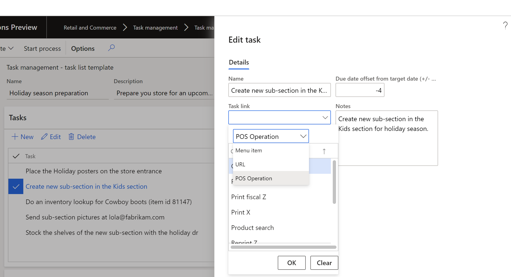

Aufgabenlisten erstellen und Aufgaben hinzufügen
Important
Dynamics 365 Retail ist jetzt Dynamics 365 Commerce und bietet umfassende Handelsfunktionen für alle Kanäle – von E-Commerce über Shops bis hin zu Callcentern. Weitere Informationen zu diesen Änderungen finden Sie unter Microsoft Dynamics 365 Commerce.
Dieses Thema beschreibt, wie Sie Aufgabenlisten erstellen und Aufgaben in Microsoft Dynamics 365 Commerce hinzufügen können.
Übersicht
Eine Aufgabe definiert eine bestimmte Arbeit oder eine Aktion, die jemand an oder vor einem bestimmten Fälligkeitsdatum erledigen muss. In Dynamics 365 Commerce kann eine Aufgabe detaillierte Anweisungen und Informationen über eine Kontaktperson enthalten. Sie kann auch Links zu Back-Office-Vorgängen, POS-Vorgängen oder Seiten der Website enthalten, um die Produktivität zu verbessern und den Kontext zu schaffen, den der Aufgabeninhaber zur effizienten Erledigung der Aufgabe benötigt.
Eine Aufgabenliste ist eine Sammlung von Aufgaben, die als Teil eines Geschäftsprozesses erledigt werden müssen. Zum Beispiel könnte es eine Aufgabenliste geben, die ein neuer Mitarbeiter während der Einarbeitung erledigen muss, eine Aufgabenliste für Kassierer, die in Abendschichten arbeiten, oder eine Aufgabenliste, die zur Vorbereitung des Geschäfts auf eine bevorstehende Urlaubssaison erledigt werden muss. Im Handel kann jede Aufgabenliste, die ein Zieldatum hat, einer beliebigen Anzahl von Filialen oder Mitarbeitern zugeordnet werden, und sie kann so konfiguriert werden, dass sie sich wiederholt.
Sowohl Manager als auch Mitarbeiter können im Backoffice des Bereichs Handel Aufgabenlisten erstellen und sie dann einer Reihe von Filialen zuordnen.
Erstellen Sie eine Aufgabenliste
Um einen Aufgabenplan zu erstellen, führen Sie folgende Schritte aus.
- Gehen Sie zu Retail and Commerce > Aufgabenverwaltung > Aufgabenverwaltung Verwaltung.
- Wählen Sie Neu, und geben Sie dann Werte in die Felder Name, Beschreibung und Besitzer ein.
- Wählen Sie Speichern.
Aufgaben zu einer Aufgabenliste hinzufügen
Um einer Aufgabenliste Aufgaben hinzuzufügen, gehen Sie wie folgt vor.
- Wählen Sie auf der Registerkarte Aufgaben einer bestehenden Aufgabenliste Neu, um eine Aufgabe hinzuzufügen.
- Geben Sie im Dialogfeld Neue Aufgabe erstellen im Feld Name einen Namen für die Aufgabe ein.
- Geben Sie in das Feld Datenversatz vom Zieldatum einen positiven oder negativen ganzzahligen Wert ein. Geben Sie z.B. -2 ein, wenn die Aufgabe zwei Tage vor dem Fälligkeitsdatum der Aufgabenliste abgeschlossen sein soll.
- Geben Sie in das Feld Hinweise detaillierte Anweisungen ein.
- Geben Sie in das Feld Ansprechpartner den Namen eines Fachexperten ein, an den sich der Aufgabeninhaber wenden kann, wenn er Hilfe benötigt.
- Geben Sie im Feld Aufgabenverknüpfung eine Verknüpfung ein, die auf der Art der Aufgabe basiert.
Tip
Obwohl Sie das Feld Zugeordnet zu verwenden können, um jemandem Aufgaben zuzuweisen, während Sie eine Aufgabenliste erstellen, empfehlen wir Ihnen, die Zuweisung von Aufgaben während der Erstellung der Aufgabenliste zu vermeiden. Ordnen Sie stattdessen die Aufgaben nach der Instanziierung der Liste für einzelne Filialen zu.
Verwenden Sie Aufgabenverknüpfungen, um die Produktivität der Mitarbeiter zu verbessern.
Im Bereich Handel können Sie Aufgaben mit bestimmten POS-Operationen verknüpfen, z. B. die Ausführung eines Verkaufsberichts, die Anzeige eines Online-Schulungsvideos zur Orientierung neuer Mitarbeiter oder die Durchführung einer Back-Office-Operation. Diese Funktion hilft den Aufgabeninhabern, die Informationen zu erhalten, die sie zur effizienten Erledigung einer Aufgabe benötigen.
Um Aufgabenverknüpfungen während der Erstellung einer Aufgabe hinzuzufügen, gehen Sie wie folgt vor.
Wählen Sie auf der Registerkarte Aufgaben einer vorhandenen Aufgabenliste Bearbeiten.
Wählen Sie im Dialogfeld Aufgabe bearbeiten im Feld Aufgabenverknüpfung eine oder mehrere der folgenden Optionen:
- Wählen Sie Menüpunkt, um einen Back-Office-Vorgang zu konfigurieren, z.B. „Produkt-Kits“.
- Wählen Sie POS-Operation, um eine POS-Operation zu konfigurieren, wie z.B. „Verkaufsberichte“.
- Wählen Sie URL, um eine absolute URL zu konfigurieren.
Die folgende Abbildung zeigt die Auswahl der Aufgabenverknüpfungen im Dialogfenster Aufgabe bearbeiten.

Konfigurieren Sie eine POS-Operation so, dass sie mit einer Aufgabe verknüpft werden kann
Um einen POS-Vorgang so zu konfigurieren, dass er mit einer Aufgabe verknüpft werden kann, gehen Sie wie folgt vor.
- Gehen Sie zu Einzelhandel und Handel > Kanaleinstellung > POS-Einrichtung > POS > POS-Operationen.
- Wählen Sie Bearbeiten, suchen Sie die POS-Operation und markieren Sie dann das Kontrollkästchen Aufgabenverwaltung aktivieren für diese Operation.
Zusätzliche Ressourcen
Übersicht über die Aufgabenverwaltung
Aufgabenverwaltung konfigurieren